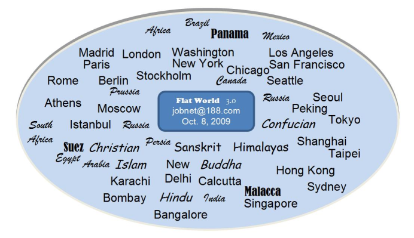

返回主页
Flat3.0 全球化地图

郑和下西洋航海路线图
Flat3.0 全球化地图
全球海上运输线路
中国原料进口路线
全部图片索引
Our species want better, sth beyond. Tribal Globalization.
Steve Jobs: The Lost Interview (2012)
Writer: Robert X. Cringely
Cringley: How do you know the right direction?
Jobs: (long pause) Ultimately it comes down to taste. It’s a matter of trying to expose yourself to the best things that humans have done. And then try to bring those things into what you are doing. Picasso had a saying: “Good artists copy. Great artists steal.” We have always been shameless about stealing great ideas.
Part of what made the Macintosh great was that the people working on it were musicians, poets, and artists, and zoologists, and historians. They also happened to be the best computer scientists in the world. But if it hadn’t been computer science, these people would have been doing amazing things in other fields. We all brought to this a sort of “liberal arts” air, an attitude that we wanted to pull the best that we saw into this field. You don’t get that if you are very narrow.
The academic Curriculum.（Winchester College, Eton College & Harrow School）2012-8-8 Art. Astronomy. Biology. Business Studies. Chemistry. Classics. Critical Thinking. Design Technology. Economics. English. Etiquette. Geography. Government & Politics. History. History of Art. Information Technology. Mathematics. Modern Languages. Music. Music Technology. Philosophy. Physical Education. Physics. Religious Studies, Divinity, Theology. Sports, Games. Statistics. Theatre Studies (Drama). Speech & Drama（语言和戏剧）
version:1.0; jobnet@188.com © retter2012.com